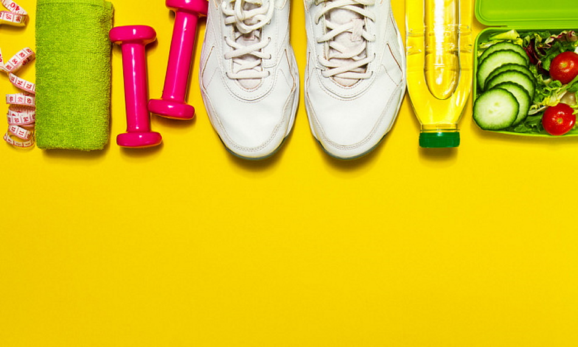
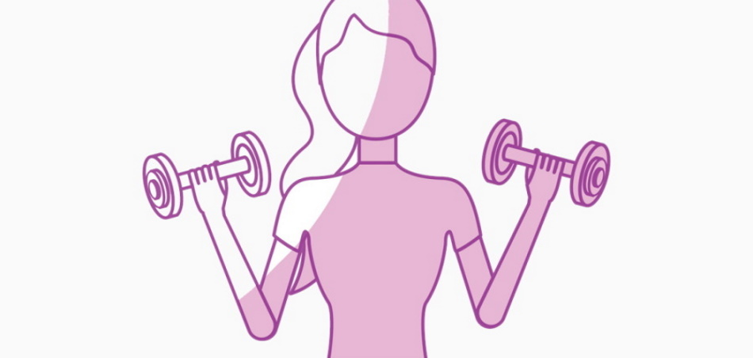

ЧТО ТАКОЕ ЗДОРОВЫЙ ОБРАЗ ЖИЗНИ?
В последнее время наблюдается положительная тенденция: все больше молодежи отказывается от пагубных привычек и следует основам здорового образа жизни. Здоровый образ жизни – это не только особенное питание или занятия спортом. ЗОЖ – это целый комплекс мер, направленных на улучшение здоровья и профилактику патологических процессов в организме. Соблюдение правил ЗОЖ позволяет значительно увеличить продолжительность жизни и улучшить ее качество.

ПРЕИМУЩЕСТВА ЗОЖА
Здоровый образ жизни оказывает существенное влияние на иммунитет. Согласно опросу тех, кто недавно поменял свой образ жизни, после начала ЗОЖ заметно улучшилось самочувствие, настроение и изменилось мировосприятие.
Кроме того, стремление вести более здоровую жизнь способствует следующим улучшениям:
• Сокращается частота рецидивов хронических заболеваний;
• При пробуждении нет усталости, чувствуется прилив сил;
• Наблюдается повышенная выносливость на спортивных тренировках;
• Сокращается частота простудных заболеваний и снижается их тяжесть;
• Кожа становится более упругой и чистой.
Кроме того, исследования показывают, что такой образ жизни позволяет снизить вероятность развития ряда возрастных заболеваний. Кроме того, это отличный пример для близких людей, и, в первую очередь, для детей.

ОСНОВЫ И МЕТОДЫ ФОРМИРОВАНИЯ ЗОЖ
Здоровый образ жизни имеет 7 основных «столпов»: физическая активность, сбалансированное питание, отсутствие вредных привычек, гигиенический уход, полноценный сон и отдых, оздоровительные процедуры и эмоциональный настрой. Если следить за всеми этими аспектами, качество жизни и самочувствие существенно улучшаются.
Вот основные правила:
• Не стоит ни голодать, ни переедать – и то, и другое негативно сказывается на самочувствии. Нельзя испытывать чувство голода и, наоборот, переедать. Старайтесь следить за тем, чтобы ежедневная норма калорий составляла 1700-1900 ккал (норма для женщин, ведущих малоподвижный образ жизни, для мужчин дневная калорийность выше примерно на 300-400 ккал).
• Пейте чистую воду. Желательно употреблять в день от 1.5 до 2 литров воды (не чая, кофе, сока и т.п.)
• Сократите количество сладостей в рационе. Если хочется сладкого – отдавайте предпочтение свежим овощам и сухофруктам. Также можно употреблять горький шоколад в умеренных количествах.
• Ешьте как минимум 4-5 раз в день небольшими порциями. По окончании трапезы должно оставаться ощущение легкого голода.
• Суточное меню должно содержать мясо или рыбу, овощи и фрукты, крупы, кисломолочные продукты. Питайтесь разнообразно.
• Ужинать желательно не менее чем за 2 часа до сна. Непосредственно перед сном есть нежелательно.
• Исключите из рациона фастфуд, жирные и копченые продукты.
• Отдавайте предпочтение варке, тушению или запеканию продуктов.
Если раньше вы не следили за питанием, вам может быть тяжело резко поменять рацион. Попробуйте начать с малого – уберите из рациона жирные соусы и продукты, которые их содержат, избегайте усилителей вкуса и химических добавок в пище, откажитесь от продуктов быстрого приготовления, полуфабрикатов, кондитерских изделий, увеличьте долю фруктов и овощей в меню. Выполнение каждого из перечисленных пунктов станет шагом к здоровому питанию.